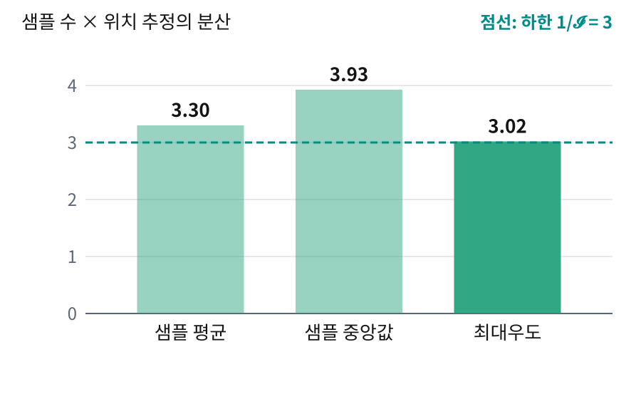
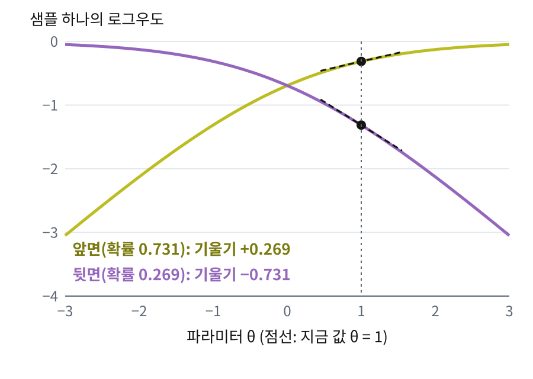
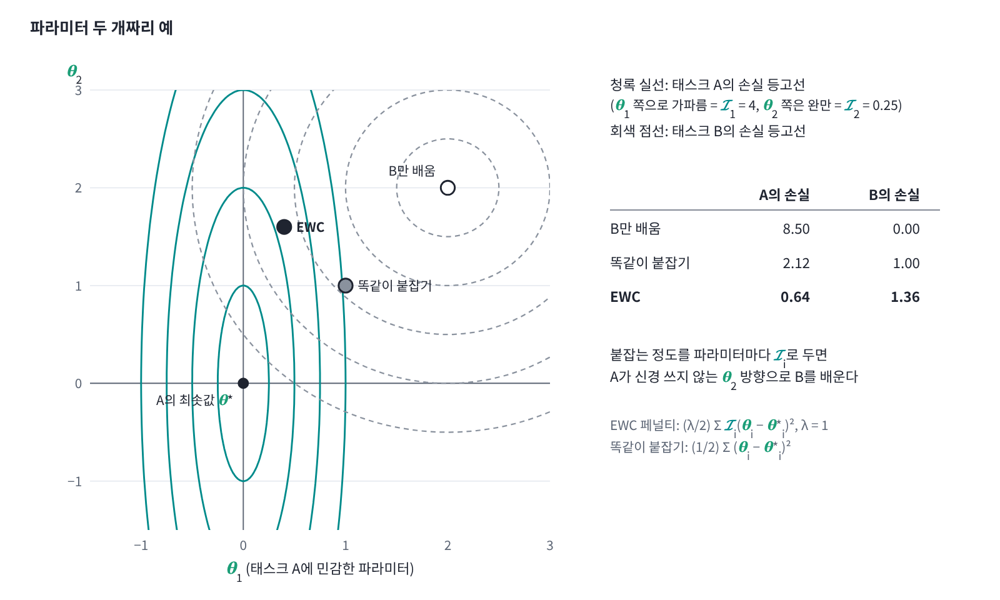
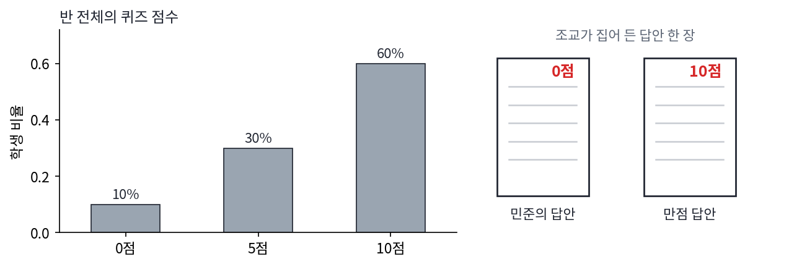
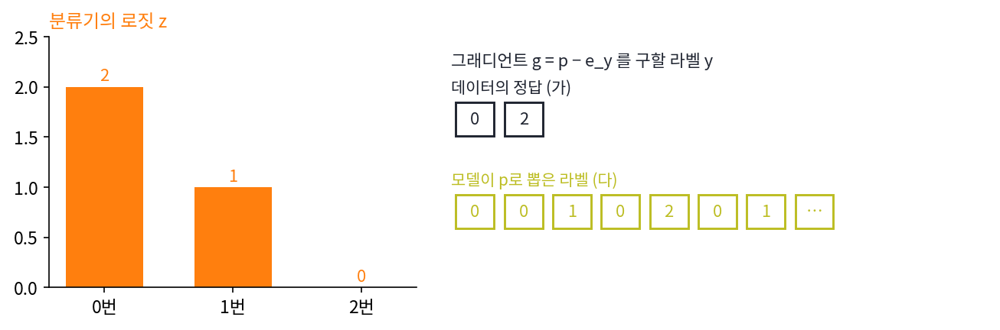

지금까지는 ln Z를 미분했지만, 통계학과 ML에서 직접 다루는 것은 샘플 하나의 로그우도다. 파라미터를 조금 바꾸면 샘플 x의 로그우도 ln p_θ(x)는 얼마나 변할까? 그 변화율인 로그우도의 파라미터 미분 ∂ln p_θ(x)/∂θ를 스코어(로그우도의 파라미터 그래디언트, score)라 한다(디퓨전 모델의 스코어는 파라미터가 아니라 입력 x로 미분한 것이라 다른 양이다). 볼츠만 분포에서는 ln p_θ(x) = −E_θ(x) − ln Z(θ)이므로 스코어가 −∂E/∂θ + ⟨∂E/∂θ⟩로, 에너지 그래디언트에서 평균을 뺀 것이다. 그래서 모델이 뽑은 샘플로 평균하면 스코어는 0이 된다. 평균이 0이라면 스코어가 담은 정보는 모두 샘플마다 스코어가 달라지는 정도에 있다. 스코어는 샘플마다 얼마나 크게 흔들릴까?
역사: 에지워스가 먼저 본 것
로그우도의 곡률로 추정의 정밀도를 잰다는 생각은 아주 좁은 경우에서 먼저 보였다. 1908년과 1909년 영국의 경제학자이자 통계학자 프랜시스 이시드로 에지워스(Francis Ysidro Edgeworth)는 왕립통계학회지에 「도수 상수의 확률 오차에 대하여」를 여러 번에 나눠 실었다. 분포의 가운데가 어디인지(위치)를 샘플로 추정하는 방법이 여럿일 때, 어느 방법의 오차가 가장 작을까? 당시에는 파라미터에 미리 확률을 매기고 거꾸로 따지는 역확률 방법이 주로 쓰였고, 에지워스의 연재도 대부분 그 방법을 앞세운 길고 난삽한 글이었다.
그 가운데 한 대목에서 그는 「역확률의 사변적 성격에서 벗어난 직접 방법」을 다루면서, 위치를 추정하는 아주 좁은 방법 모임(지금 말로 위치 파라미터의 M-추정량) 안에서는 우도를 가장 크게 하는 값의 표준편차가 가장 작다고 적었다. 증명은 수학자 러브(A. E. H. Love)가 일러 준 슈바르츠 부등식에 기댔다. 이 장 뒤에서 코시–슈바르츠 부등식이라 부르는 것이다.

위치 파라미터 하나인 로지스틱 분포(척도 1)에서 샘플 50개로 위치를 추정하는 실험을 20만 번 되풀이해 세 방법의 분산을 견준 막대. 샘플 수에 상관없이 견주려고 분산에 샘플 수를 곱했다. 샘플 평균 3.30, 샘플 중앙값 3.93, 최대우도 3.02로, 최대우도가 뒤의 「추정의 정밀도」 절에서 볼 하한 1/𝓘 = 3(점선)에 가장 가깝다. 설명을 위해 고른 분포이고 에지워스의 예가 아니다
그러나 글이 워낙 빽빽해 당대에 이 대목을 알아본 사람은 없었던 것으로 보이고, 피셔의 연구에 영향을 준 흔적도 없다. 피셔는 1925년 논문 「통계적 추정의 이론」에서 스코어의 분산이 로그우도 곡률의 평균과 같다는 것을 써서 그 분산을 샘플이 담은 정보의 양으로 삼았고, 오늘날 Fisher 정보라 부르는 양이다. 위치 파라미터 하나가 아니라 어떤 파라미터에도 쓸 수 있는 양이었다. 에지워스는 1926년에 세상을 떠났다. 1935년 볼리가 에지워스의 작업이 피셔의 결과와 닮았다고 짚었고, 1951년 네이먼은 피셔 논문집 서평에서 피셔의 우선권 주장이 부당하다며 이 대목을 다시 꺼냈다. 피셔는 그해 편지에서 에지워스에게 「낌새」는 있었지만 역확률에 기댔고 위치 파라미터에 한정했다고 반박했다. 통계학의 역사를 연구한 스티글러는 이를 독립적인 부분적 선취, 「사례가 아니라 암시」라고 평했다.
flowchart LR
A["1908–09 에지워스<br/>위치 파라미터만<br/>최대우도의 표준편차가 가장 작다"] --> B["1925 피셔<br/>어떤 파라미터에도<br/>스코어의 분산 = 정보의 양"]
B --> C["1935 볼리<br/>둘이 닮았다고 짚음"]
C --> D["1951 네이먼과 피셔<br/>우선권 다툼"]
김민준
그림처럼 세 방법을 20만 번씩 돌려 보면 최대우도가 제일 덜 흔들리는 게 바로 보이는데요.
선생님
그 20만 번을 1908년에 손으로 한다면요?
김민준
샘플 50개를 뽑아 중앙값 구하고, 최대우도 방정식 풀고… 한 번에도 한참 걸리겠네요. 그래서 부등식으로 증명하는 수밖에 없었던 거군요.
이서연
그런데 증명까지 했으면 위치 말고 다른 파라미터로 넓히는 건 금방이었을 것 같은데요. 왜 위치 파라미터에서 멈췄을까요?
선생님
넓히려면 견줄 양부터 있어야 해요. 위치만 다룰 때는 추정값의 표준편차끼리 견주면 됐지만, 어떤 파라미터에나 통하는 「샘플이 담은 정보의 양」은 피셔가 1925년에 스코어의 분산으로 처음 세웠어요. 게다가 당시 주로 쓰인 건 역확률 방법이라, 그 틀 밖의 직접 방법은 연재 속 한 대목에 그쳤고요.
이서연
스코어의 분산이 정보의 양이라면, 스코어가 샘플마다 크게 흔들릴수록 정보가 많다는 거예요? 흔들리면 오히려 덜 믿음직할 것 같은데요.
스코어의 공분산
스코어는 평균 0 주위로 흔들리고, 그 흔들리는 정도는 공분산으로 잰다. 모델이 스스로 뽑은 샘플에서 스코어의 공분산을 Fisher 정보 (분포가 파라미터에 얼마나 민감한지, Fisher information)라 한다. 글자 I는 엔트로피 계열의 상호정보량 I(X; Y)가 쓰고 있으므로 이 책에서는 필기체 𝓘로 쓴다. 볼츠만 분포에서는 스코어가 에너지 그래디언트에서 평균을 뺀 것이었으므로, 그 공분산은 에너지 그래디언트의 공분산과 같다.

로짓이 θ 하나인 동전 모델에서 샘플 하나의 로그우도. 앞면이 나왔을 때의 곡선(올리브)과 뒷면이 나왔을 때의 곡선(보라)이 지금 값 θ = 1에서 갖는 기울기가 그 샘플의 스코어다. 앞면이면 +0.269, 뒷면이면 −0.731로 샘플마다 흔들리고, 확률 0.731과 0.269로 평균하면 0, 분산은 0.197이다. 이 분산이 Fisher 정보다
가운데 등호는 로그우도의 곡률을 모델 분포로 평균하면 스코어의 공분산과 같아진다는 뜻이다. 곡률은 파라미터를 움직였을 때 로그우도가 어떻게 휘는지 묻는 응답의 양이고, 스코어의 공분산은 샘플마다 스코어가 흔들리는 요동의 양이므로, 이것도 요동-응답 관계의 한 모습이다. 에너지가 파라미터의 일차식이면 셋은 모두 ∂²ln Z/∂θₐ∂θ_b와 같다. 곡률을 1차 미분만으로 잴 수 있는 이유(이 장의 첫 질문)가 이 가운데 등호다. 곡률 자체는 2차 미분이지만, 곡률의 평균이 1차 미분(스코어)의 공분산과 같으니 스코어를 여러 번 뽑아 공분산을 내면 된다.
ML에서: EWC
태스크 A를 배운 신경망이 태스크 B를 배우면 A를 잊는다. 커크패트릭 외(2017)의 EWC는 태스크 A를 마친 파라미터 θ*에서 Fisher 정보의 대각 성분 𝓘ᵢ를 구해 두고, 태스크 B를 배울 때 (λ/2)Σᵢ𝓘ᵢ(θᵢ − θ*ᵢ)²를 손실에 더한다(λ는 얼마나 세게 붙잡을지 정하는 계수다). 태스크 A의 분포를 많이 흔드는 파라미터일수록 강하게 붙잡아 두는 것이다. 논문은 이 행렬에 대해 「F는 세 가지 핵심 성질이 있다. (a) 최솟값 근처에서 손실의 2차 미분과 같고, (b) 1차 미분만으로 계산할 수 있어 큰 모델에서도 계산하기 쉬우며, (c) 양의 준정부호임이 보장된다」고 적었다. 논문의 F가 이 책의 𝓘다.

파라미터 두 개짜리 EWC 예. 태스크 A의 손실은 θ₁ 쪽으로 가파르고(𝓘₁ = 4) θ₂ 쪽으로 완만하다(𝓘₂ = 0.25). 태스크 B만 배우면 A의 손실이 8.50으로 커지고, 두 파라미터를 똑같이 붙잡으면 2.12, 파라미터마다 𝓘ᵢ만큼 붙잡는 EWC는 0.64로 A를 가장 덜 잊으면서 B의 손실은 1.36이다.
세 성질은 요동-응답 관계라는 하나의 사실을 세 방향에서 본 것이다. (a)는 Fisher 정보가 곡률(응답)이라는 것이고, (b)는 Fisher 정보가 스코어의 공분산(요동)이라는 것이며, (c)는 분산이 음수일 수 없다는 것이다. 다만 (b)를 실제로 계산하려면 1차 미분을 어느 라벨로 구할지 정해야 하는데, 손에 쥔 데이터의 정답 라벨로 그래디언트를 구해 제곱해도 되는지는 아래 문제 10에서 숫자로 따져 본다.
문제 9. 답안 한 장으로 잰 퍼짐
어느 반의 퀴즈 점수는 10점이 60%, 5점이 30%, 0점이 10%다. (가) 이 반 점수의 평균과 분산을 구하라. (나) 조교가 0점을 받은 민준의 답안 한 장만 보고 (점수 − 평균)²을 반의 분산으로 적었다면 몇 배 틀렸는가? 10점짜리 답안 한 장이었다면? (다) (점수 − 평균)²을 어떻게 평균해야 반의 분산이 되는가?

문제 9의 반 점수 분포(10점 60%, 5점 30%, 0점 10%)와, 조교가 집어 들 수 있는 답안 두 장 (sources/ch10/problems_figs.py)
10점짜리 답안을 집었으면 (10 − 7.5)² = 6.25가 나오잖아. 어느 답안을 집었느냐에 따라 아홉 배나 달라지는 게 반의 분산일 수는 없지.
선생님
분산의 정의에서 (점수 − 평균)²은 무엇에 대해 평균을 내죠?
김민준
반 전체 점수 분포요. 0.6 × 6.25 + 0.3 × 6.25 + 0.1 × 56.25 = 11.25네요. 제 답안 하나로는 다섯 배나 크게 적힌 거고, 만점 답안 하나로는 반도 안 되게 적혀요.
이서연
확률변수 하나의 값으로 기댓값을 대신 쓴 거네요. 샘플 하나는 분포에서 나온 한 점일 뿐이고요.
문제 10. 데이터 라벨로 잰 스코어의 분산
같은 분류기(로짓 z = (2, 1, 0))에서 로짓에 대한 Fisher 정보를 구하려 한다. (가) 정답 라벨 y로 구한 손실 그래디언트 g = p − e_y의 외적 ggᵀ의 대각 성분을 y = 0과 y = 2에서 구하라. (나) Fisher 정보 diag(p) − ppᵀ의 대각 성분과 비교하라. (다) 모델이 확률 p로 뽑은 라벨로 ggᵀ를 평균하면 무엇이 되는가?

문제 10의 로짓 (2, 1, 0)과, 그래디언트 p − e_y를 구할 라벨을 가져오는 두 곳: 데이터의 정답(가)과 모델이 확률 p로 뽑은 라벨(다). 뽑은 라벨 줄은 한 예다 (sources/ch10/problems_figs.py)
김민준
Fisher 정보는 스코어의 제곱 평균이잖아요. Adam도 그래디언트 제곱의 평균을 쓰니까 데이터 라벨로 그래디언트를 구해서 제곱하면 되죠. p = (0.665, 0.245, 0.090)이니까 y = 0이면 g = (−0.335, 0.245, 0.090)이고 대각 성분이 (0.112, 0.060, 0.008), y = 2면 g = (0.665, 0.245, −0.910)이라 (0.442, 0.060, 0.828)이에요.
이서연
Fisher 정보의 대각은 (0.223, 0.185, 0.082)인데 둘 다 안 맞아. y = 2일 때 셋째 성분은 10배나 커. 게다가 ggᵀ는 벡터 하나의 외적이라 랭크(rank)가 1인데 Fisher 정보는 랭크가 2야.
김민준
정답을 하나만 봤으니 그런 거 아냐? 데이터가 많으면 평균이 맞춰 줄 거야.
선생님
Fisher 정보의 정의에서 평균은 어느 분포로 냈죠?
김민준
⟨·⟩_p_θ요. 모델 분포요. 아… 모델이 스스로 라벨을 뽑아야 하는 거였네요. 그럼 (다)는 y마다 p_y를 곱해서 더하면… Σ_y p_y (p − e_y)(p − e_y)ᵀ를 전개하면 ppᵀ − ppᵀ − ppᵀ + diag(p)라서 정확히 diag(p) − ppᵀ예요.
이서연
결국 Fisher 정보는 모델이 자기 확률대로 라벨을 뽑았을 때 그래디언트가 얼마나 흔들리는지를 잰 거고, 데이터 라벨은 모델이 흔들리는 모습이 아니야. 데이터가 정말 이 모델에서 나왔다면 평균이 같아지겠지만, 학습 중인 모델은 대개 데이터와 다르잖아.
선생님
정답 라벨로 구한 그래디언트 제곱을 경험적 Fisher라 부르는데, Kunstner 외(2019)는 이것이 일반적으로 곡률 정보를 담지 못하고, 간단한 최적화 문제에서도 학습을 그르칠 수 있다는 것을 보였어요. 요동은 모델 자신의 것이에요. EWC 같은 방법을 구현할 때 라벨을 모델에서 뽑는지 데이터에서 가져오는지 꼭 확인해야 하는 이유죠.
김민준
문제 9(답안 한 장으로 잰 퍼짐)에서 조교님이 제 답안 한 장으로 반의 분산을 적은 거랑 같네요. 그런데 이번엔 하나가 더 있어요. 답안을 아무리 많이 모아도 옆 반 답안이면 우리 반의 퍼짐은 안 나오는 거잖아요. 데이터 라벨이 옆 반 답안이었던 거예요.